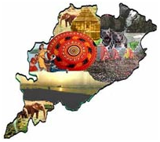
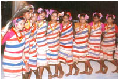

History Of Odisha
Temples & Monuments
Wildlife
Heritage Odisha
Art & Craft
Tourist Spots
Odisha (Formerly Orissa) occupies an unique position in the ethnographic map of India for having the largest variety of tribal communities.Although they are found in all the districts of the State, yet more than half of their total strength are found in the districts of Koraput, Rayagada, Naurangpur, Malkangiri, Kalahandi, Nauapara, Kandhamal, Baudh, Keonjhar, Sundargarh and Mayurbhanj.
 
The tribes of Odisha (Formerly Orissa) are at various stages of socio-economic development. At one extreme are the group which lead a relatively secluded and archaic mode of life keeping their core culture intact, while at the other extreme there are communities which are indistinguishable from the general agricultural communities.Any society - tribal or otherwise, comprises of organised groups of people who have learnt to live and work together interacting in the pursuit of common goals. Each society has its own rules of business and tricks of trade which helps its people to define their relationship with one another and live and work together. Therefore a society is a going concern and functions and perpetuates itself on the basis of the rules for living together.
The tribal people express their cultural identity and distinctiveness in their social organisation, language, rituals and festivals and also in their dress, ornament, art and craft. They have retained their own way of managing internal affairs of the village mainly through two institutions namely, the village council and the youth dormitory. The dormitory is the core of tribal culture and it reinforces the age-old traditions. In Odisha (Formerly Orissa) this institution occurs among many tribal communities in some form or other. The Juangs call it Majang and Darbar, the Kondhs call it Dindaghar, the Bhuyans call it Dhangarabasa and among the Bondos it goes by the name Ingersin. Of all the tribes the dormitory system is well organized among the Juang. Conspicuous in the village, the Mandaghar is the largest hut. It has wall on three sides and is open in front. The wooden parts and side walls are carried with decorative symbols depicting animals. The boys hang their changu, a flat tambourine like drum which is used at the time of dancing. In front of the Mandaghar is the small open space where dance takes place almost every night after the day's work is over. The dormitory is so to say a school of dancing and expression of the communal art of the people. The elders of the village assemble at the dormitory house every day for every important event in their corporate life. Here they discuss matters concerning the welfare of the village, settle the distribution of swidden and fix date and time for celebration of the village festivals, etc. In these respects the dormitory may be considered as the centre of social, economic and religious life of the village.
The amazing conglomeration of traditions, beliefs, sorrows and philosophies that together constitute and vitalise the rituals and festivals of the tribes, has descended from antiquity and has been preserved unimpaired to the present day. Every facet of their life covering round-the-year activities is intimately connected with religious beliefs and ritual practices. It is these aspects of their culture that give meaning and depth to their lives, and solidarity to their social structure.
The tribes believe that their life and work are controlled by supernatural beings whose abode is around them in hills, forests, rivers and houses. It is very difficult to standardize the Gods and spirits as their composition continually changes when old ones are forgotten with the introduction of new ones. Their Gods differ from one another in composition, function, character and nature. Some are benevolent; some are neutral and some are malevolent. The malevolent spirits and Gods are cared more than their benevolent counter parts as they can bring misery.
Manipulation of environment being the main concern of the tribals, all the ritual acts are directed towards stimulating natural processes. Illness or misfortune is attributed to displeasure and malicious act of the Gods or ancestors. The sacrifice of different kinds of livestock accompanied by all the rites and ceremonials of fetishism is considered appropriate appeasement. Moreover, their extremely superstitious nature prohibits the undertaking of any enterprise unless the Gods are first appeased and the omens, after being carefully considered, are adjudged to be propitious.
Among the tribes there are religious functionaries who cater to their spiritual needs. For example, the hierarchy of priests among the Saoras may be divided into three categories. The Buyya is a priest who presides at agricultural festivals and offers sacrifices that especially characterize these occasions. The Kudan is a shaman who combines the functions of priest, prophet and medicine-man. The sacerdotal head among the Juang is called Nagam or Buita, Pujari or Sisa among the Bondos and Jani among the Kondhs. The post of these officials are mostly ascribed but not achieved.
The ceremonies and festivals of the tribes can be classified into two groups, that is, those that relate to the individual families and those that relate to the village as a whole. The ceremonies and rites relating to birth of a child, marriage, death are observed family-wise whereas those relating to various agricultural cycle, eating of new fruits, hunting, etc. are observed by the village community.